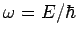
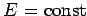
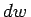
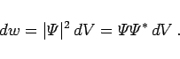

Inhalt Index DeskTop Bronstein

 Differentialgleichungen Partielle Differentialgleichungen Partielle Differentialgleichungen aus Naturwissenschaft und Technik Schrödinger-Gleichung
Differentialgleichungen Partielle Differentialgleichungen Partielle Differentialgleichungen aus Naturwissenschaft und Technik Schrödinger-Gleichung


Den allgemeinen nichtrelativistischen Fall eines spinlosen Teilchens mit der Masse m und der Geschwindigkeit v im orts- und zeitabhängigen Potentialfeld U(x1,x2,x3,t) beschreibt die zeitabhängige SCHRÖDINGER-Gleichung (9.109a). Die unter Besonderheiten aufgeführten speziellen Bedingungen, denen die Wellenfunktion genügen muß, lauten:
Gemäß Normierungsbedingung muß die Wahrscheinlichkeit, das Teilchen im betrachteten Gebiet zu finden, gleich 1 sein. Dazu reicht (9.110a) aus, weil das Integral stets durch einen Faktor vor  auf 1 gebracht werden kann.
auf 1 gebracht werden kann.
Eine Lösung der zeitabhängigen SCHRÖDINGER-Gleichung hat die Form
Der Zustand des Teilchens wird in einem Zeitpunkt t durch eine periodische Funktion von der Zeit mit der Kreisfrequenz  beschrieben. Wenn die Energie des Teilchens in dem Zustand den festen Wert  besitzt, dann hängt die Wahrscheinlichkeit , es in einem Raumelement dV zu finden, nicht von der Zeit ab:
|  | (9.110c) |
Man spricht vom stationären Zustand des Teilchens.